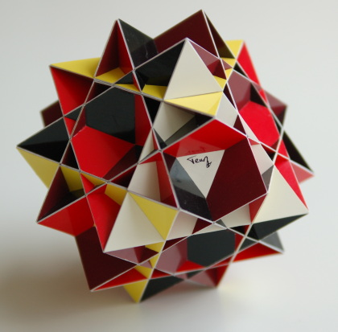

The model above is the Great Ditrigonal Icosidodecahedron. built it for Xmas. My idea was to build an inverted sky (inside out) with 12 stars. It has a close relationship with the well-known compound of 5 cubes. It's rather easy to recognise the five cubes. The only drawback of the model is that it's not such a rigid model. A close look learns that not all edges are straight. Ah well, I'm still satisfied with the result. Years later I opened up the model and added support inside the fix this a bit.
I started this model after break of not building, just to get the feeling back again. I decided to use a bit of a different colour arrangement. Instead of colouring the octagrams with one colour they got three colours. The reason for this was that I wanted to accentuate the crowns, while using the Swedish national colours. Using black and white for the triangles, I wanted to put these a bit apart. The red I used to give the whole model a warm centre.
If you want to make this one as well you can write out this PDF file which I prepared. You can use it as a template. You will only need the coloured parts.
Here is another picture of the model:
Just before starting the design of a new model I wanted to build this one, just because it looked like a very intresting model to me while I was browsing through Magnus Wenninger's book "Polyhedron Models" for inspiration. The Quasitruncated Cuboctahedron is also called Great Truncated Cuboctahedron.
It can be observed easily that this model consists of squares (12) and octagrams (6). What is not so easy to see here is that the model also consists of hexagons (8). I gave half of these the colour yellow and the other half the colour blue. I the colour arrangement I chose, I tried to emphasize the fact that the octagrams and the squares lie in planes of three cubes, by using the one colour for the faces that lie in one cube. I also used colours that are alike: red, pink, and bordeaux-red. The hexagons with yellow and blue have very different colours. The arrangement of the yellow and blue is done in such a way that each colour lies in a plane of a tetrahedron.
The amazing thing about this model is that it has an intrigate interior structure formed by the 8 hexagons. The interior structure consists of an octahedron and a stella octangula, where the octahedron is the base for the stella octangula. Of the latter the vertices are cut off so that 8 "caves" appear. Here you can see a picure of it, and here you see it with some faces glued on. In the model one can look into one of those through the triangular hole that was formed by this process of cutting off one vertex of the stella octangula. In the picture above I try to show that. One looks on the yellow triangle as part of the octahedron.
Oh, the thing on the right side is a tea bag. It is Yogi Tea Classic, one of my favorite teas. It is a kind of Indian tea, though the real one should be boiled some time with the herbs, instead of just using a tea bag.
Enthousiastic people that want to make a model of this one can download a template, though I have to warn that this is not a model for beginners. Not because it is difficult to build this one, but it not easy to understand which parts you should be put where. First I have a coloured template, in which you can see how the different parts lie in one plane. I also have a black and white print, which is easier to use as a template. The template can be used to prick holes at the vertices to be able to draw the pieces on cardboard. (Don't forget to use tabs inside.)
Some building tips.

The model above I built for my mom. This was actually the first model I wanted to build after browsing through Magnus Wenninger's book "Polyhedron Models", but it took me more than 10 years before I actually started on this. I really think this polehedron is beatiful and I am very satisfied with the resulting model, since it is pretty difficult to get the edges straight. I also like it that the model isn't so big: the edges of the model are only 10.6 cm (~4.2 inches). The only disadvantage is that I cannot enjoy the model as much as I want, since it is no longer in my possession. In Wenninger the polyhedron is called Quasi Rhombicuboctahedron.2009-03-09
{kind=link}
{kind=link}
{kind=link}